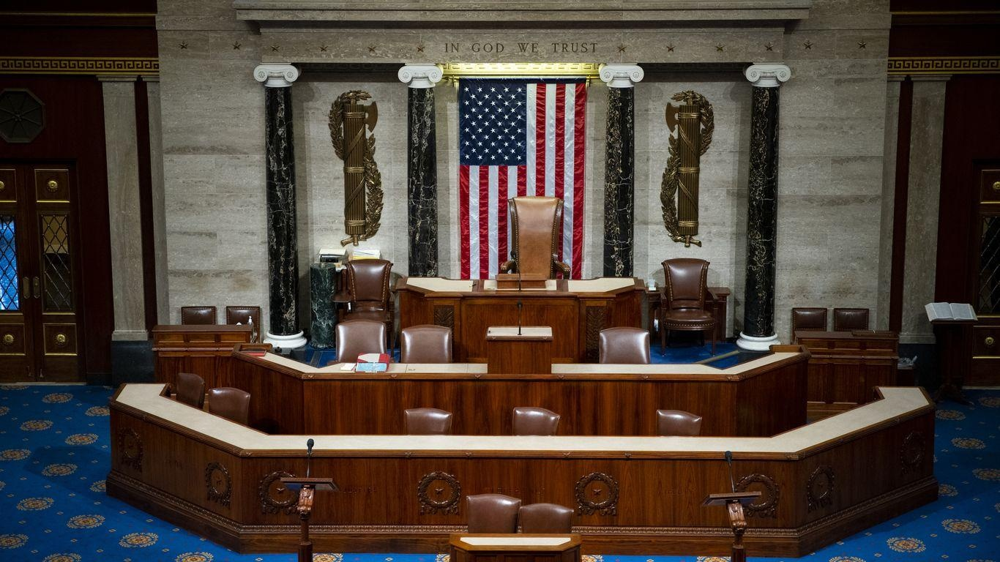

House GOP desperately tries to prevent speaker paralysis 2.0Some House Republicans fear the party could be paralyzed by the push to require 98% GOP support for a speaker nominee before a House floor vote. Why it matters: House Republicans are looking to avoid a floor fight like January, when it took 15 ballots to elect former Speaker Kevin McCarthy — but no GOP candidate currently has the votes to secure the gavel on the floor. - Neither Majority Leader Steve Scalise nor Judiciary Chair Jim Jordan can currently bank on the 217 votes needed to win the speakership in a House floor vote. There are two vacant House seats, bringing the number for a majority down from 218. - A handful of members are pushing for the reinstatement of McCarthy, further complicating the math. Zoom in: A group of lawmakers are pushing for an amendment to "temporarily raise the threshold" for a nominee to the full 217 votes needed to win the speaker election on the House floor — instead of simply requiring majority support within the Republican conference . - The effort is led by conservative Rep. Chip Roy (R-Texas) and moderate Rep. Brian Fitzpatrick (R-Pa.). - But some fear that the divide in the conference could be problematic in swiftly filling the position. - Some lawmakers have warned that they won't back any speaker who doesn't back rules changes, including altering the motion to vacate to make it harder to oust a sitting speaker. What they're saying: "It's strangely a worse circumstance than we have now even though it's well intentioned," one House Republican told Axios following a conference meeting on Monday evening. - The member told Axios that House Rules Chair Tom Cole (R-Okl.) and Rep. Drew Ferguson (R-Ga.) spoke out against the idea during an internal GOP meeting. - Another GOP lawmaker told Axios that "I think they're hoping this will just beat us to submission, but a few of us think it's a dumb idea ... I think we're just going to have to govern, and we're gonna have to find some Dems and this is gonna lock us into each other and we're handcuffing ourselves to our colleagues we already know." - "We'll have to see how that plays out. And that 217 rule, it sounds a little more complicated than just the 217 rule. It sounds like there's a process involved here to really force us to get to some sort of conclusion. And like conclusion doesn't necessarily mean a person. It can mean like, we're just never gonna get there," the member added. - "I don't see it happening," a third member said. What's next: House Republicans are slated to hold a candidate forum on Tuesday evening, with top Republicans aiming to hold their internal election on Wednesday. - But several members have stated that the process may drag on as Congress remains paralyzed without a speaker in place. - "We're going to agree on a speaker," said House Majority Whip Tom Emmer (R-Minn.), dodging whether it would happen by Wednesday. |
 |